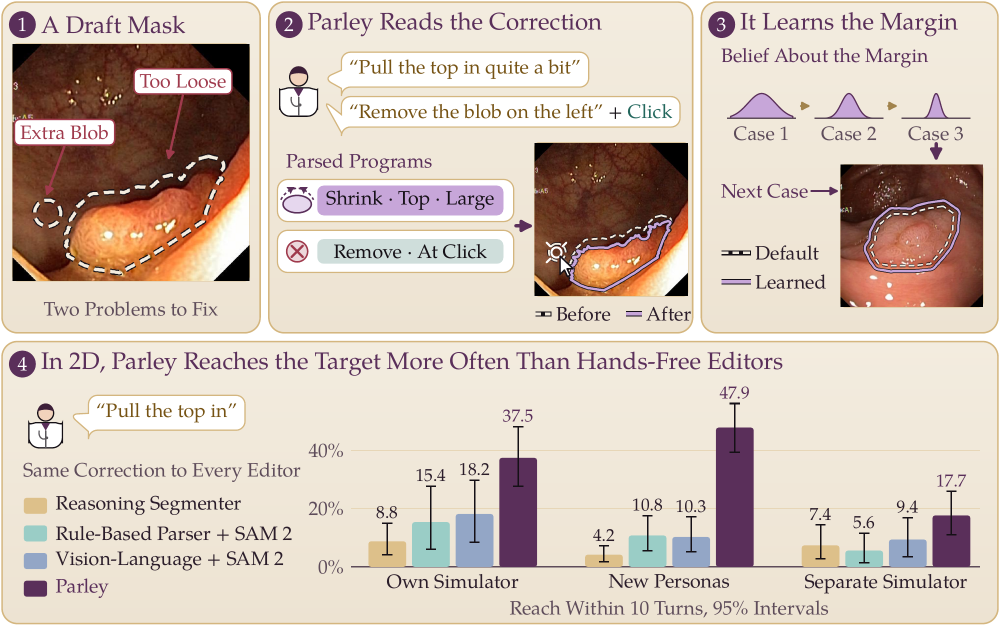
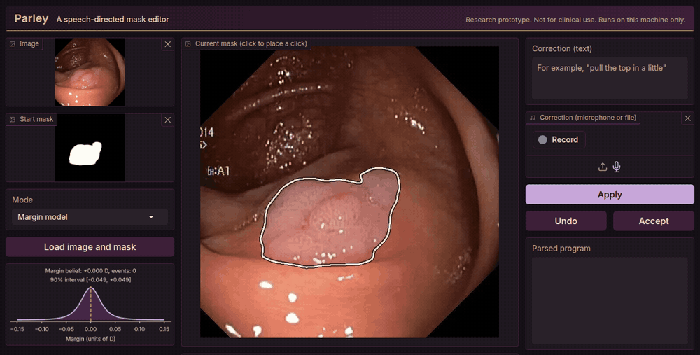
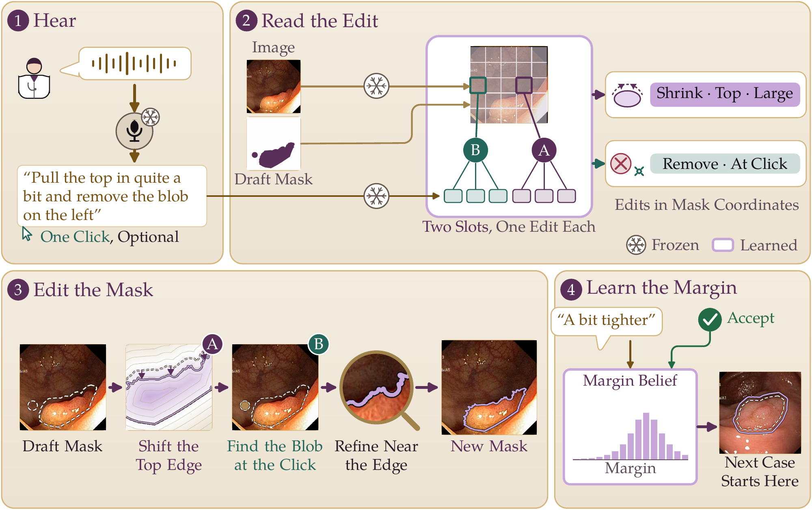
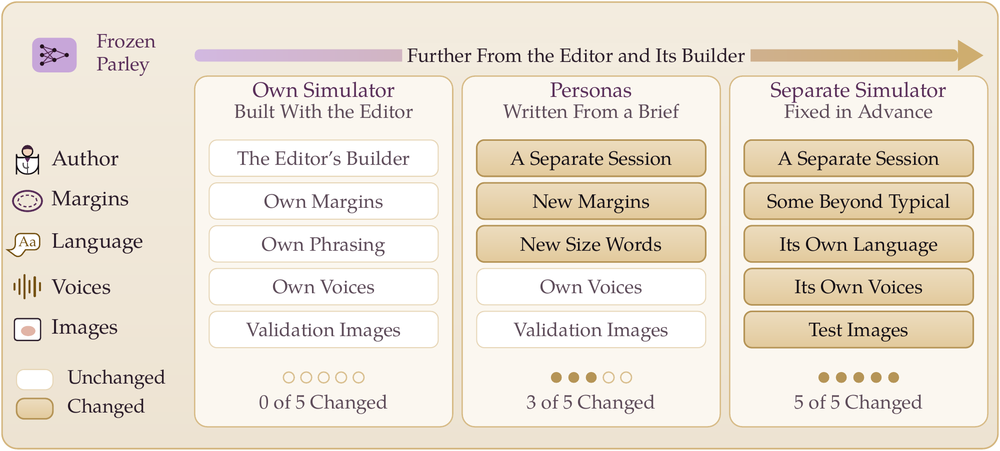
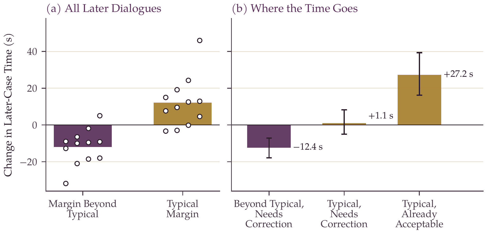
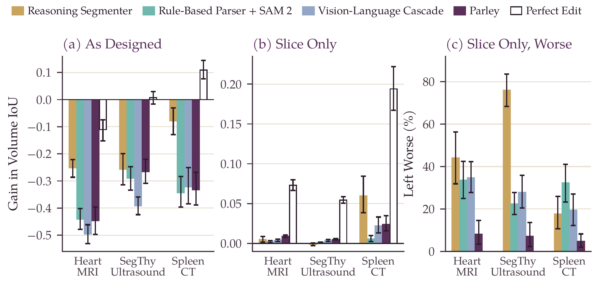
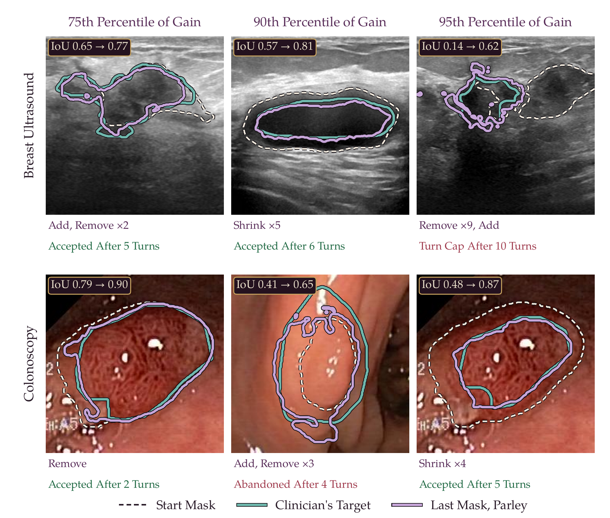

Parley reads a spoken correction as a short program on the mask in front of the clinician.
Frozen and moved to a simulator it was not built with, it gained much less, and a difficulty
control was enough to see it.

Parley reads a spoken correction as an edit to the mask on screen and learns each clinician's margin.
Panels 1 to 3 are illustrations made from the ground truth. Panel 4 shows reach with 95% intervals on three
groups of simulated clinicians; these comparisons are post hoc.
Abstract
Why Measure the Simulator
We know of no public recordings that pair clinical dictation with mask edits, so spoken segmentation editors
are built and tested on simulated clinicians. We present Parley, an inspectable speech-directed mask editor with
an evaluation kit, and measure how far its evidence depends on the simulator.
Parley reads each utterance as a program in mask coordinates, and a Bayesian margin model tracks each
clinician's preferred margin. One frozen editor was evaluated on breast ultrasound and colonoscopy with three
groups of simulated clinicians: our own simulator, separately written personas, and a separately authored
simulator with its own language, voices and test images. Two tests on the separately authored simulator were
fixed in advance; the other comparisons are post hoc, with two-way clustered intervals and a click model as a
difficulty control.
Mean gain in IoU fell from 0.140 on the own simulator to 0.026 on the separately authored one, a drop not seen
in the control, and neither pre-specified test favored Parley there. A frozen, inspectable editor and a second
simulator were enough to show how far simulated evidence for a conversational tool can be relied on. Our kit and
protocol let other groups run the same check.
Demo
Every Turn Shows What Was Understood
The local demo after three typed corrections on a validation image, then undo. Each turn prints the transcript,
the parsed program and the change, and the margin belief updates beside the image. Real model output, seed 0,
on a CPU.

1.4 sAudio to mask, 8 CPU threads
147 msTurn from a transcript, CPU
224 msAudio to mask, GPU
7.6 MTrained parameters
Method
Every Edit Is a Program in the Coordinates of the Mask
"The top" is the arc of the boundary whose outward normal points up, "a little" is a fraction of the lesion's
equivalent diameter, and "pull in" is a signed change of the signed distance function on that arc.

One turn. Frozen encoders carry a snowflake; learned parts are lilac. Two query slots each read one
edit into a program, the executor applies it, and the margin model updates. Masks are illustrations.
Edit Programs
An edit has a type, an anchor, a sign and an amount in units of the lesion's size. Shrink and grow move the
zero level set along the normal; add and remove use a predicted region, with one optional click to locate it.
Up to two edits per utterance.
A Margin Model
Each correction carries a sign and a size, so it says where this clinician wants the boundary. A posterior
over the clinician's margin is updated exactly on a grid after every turn, with no gradient step, and starts
the next case at its mean.
An Evaluation Kit
parley.evalkit runs any editor through any simulated clinician and reports reach, gain, masks
improved and made worse, simulated time, and a two-way bootstrap over clinicians and images.
Try the Edit Language
Pick a sentence to see the program it is meant to produce. An illustration of the language, not
model output: the network does not always deliver the intended program, which is why the demo shows it.
ShrinkTopSmall
Moves the top arc inward by a small fraction of the lesion's diameter.
Evaluation
Three Groups of Simulated Clinicians
One frozen editor, three groups: the simulator it was built with, personas written separately in the same
language, and a simulator written separately with its own language, voices and test images. Each group was
written in its own session; the separation is between sessions, not between research groups.

Gold cells differ from the setting the editor was built with. The separate simulator changes all five
at once, so a difference from the own simulator has no single cause.
Findings
What the Frozen Editor Showed
In 2D, Parley reaches the target more often than hands-free editors, by less on the separate simulator
Reach is the share of dialogues needing correction that get within IoU 0.85 of the clinician's
target in 10 turns; the hands-free editors receive the same speech, with clicks where they take them. The lead is
about twofold on the own simulator and about fourfold on the new personas. On the separately authored simulator
the 95% interval of the lead over the strongest editor includes zero. These comparisons are post hoc.
The gain falls sharply on a separately authored simulator
Own simulator+0.140
New personas+0.154
Separate simulator+0.026
Mean gain in IoU from the start mask, Parley with speech and click. The change from the own
simulator is −0.115 (95% CI −0.171 to −0.059). SAM 2 under exact clicks does not lose gain over
the same step, and the difference in differences excludes zero in every matched margin range, so a harder
simulator does not explain the drop. Personas in the familiar phrasing lost no gain: a second persona set in the
same language can look like a replication while testing little.
The margin model trades time between clinicians

In exploratory analysis on the separate simulator, the margin model is faster for clinicians whose
margins are beyond typical and slower by about the same number of seconds for typical ones, so the overall
difference is near zero. The cost comes mainly from the start offset, which moves already acceptable masks out
of acceptance. Per-clinician adaptation should be judged by who pays for it.
In volumes, a shared propagation step decides the outcome

In a post hoc extension to three volumetric datasets, every speech editor lowered volume IoU when
each edit was carried through the volume by SAM 2 propagation, and a reasoning segmenter lost least. An editor
that makes perfect edits showed that on Heart the propagation step itself lowers overlap, so there the
comparison measures the propagator, not the editors.
When it works, the edits follow the target closely

Upper-percentile cases on the separate simulator (75th, 90th and 95th percentile of gain, chosen by a
rule fixed in code before any mask was viewed). They are not typical: about half of the dialogues that need
correction end above their start.
Protocol
Five Steps for Testing a Conversational Editor
Proposed from this one case. The kit provides the runner, the outcomes and the clustered intervals.
1
Test on a Simulator the Editor Was Not Built Around
With its own language, and report who wrote it and what they could read.
2
Fix the Test in Advance
Slice, endpoints and tests, then run it once.
3
Add Controls
An arm that uses no language, to show how much harder the new simulator is, and a perfect editor wherever all editors share a step.
4
Report by Clinician Type
An average can hide a trade: here two groups moved in opposite directions.
5
Cluster the Intervals
By simulated clinician and by image, since dialogues that share either are not independent.
Limitations
What This Does Not Show
Every clinician in the evaluation is simulated and every utterance is synthesized, so the results describe
behavior under these simulators, not clinical use. Two physicians have tried the demo with a live microphone,
but there was no clinical study. On the separate simulator, SAM 2 given the simulator's clicks reached the target
more often than Parley, and a cached click is much faster than a spoken turn; speech is meant for moments when
the hands are busy, which this study did not test. All simulators came from separate sessions of one AI coding
assistant under the same investigators. Parley is a research prototype and not a medical device.
Citation
BibTeX
@article{nguyen2026parley,
title = {Parley: A Speech-Directed Segmentation Editor and Its Evaluation
Across Separately Authored Simulators},
author = {Nguyen, Thanh-Huy and Bagci, Ulas},
journal = {Computer Methods and Programs in Biomedicine},
year = {2026},
note = {Under review}
}